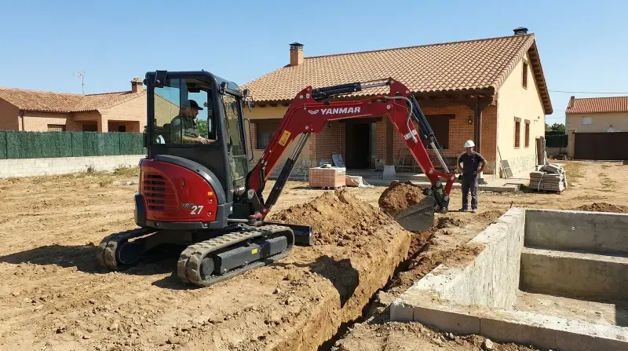
Excavaciones
Vaciados, zanjas, cimentaciones, desmontes y movimiento de tierras para obra nueva, naves y parcelas.
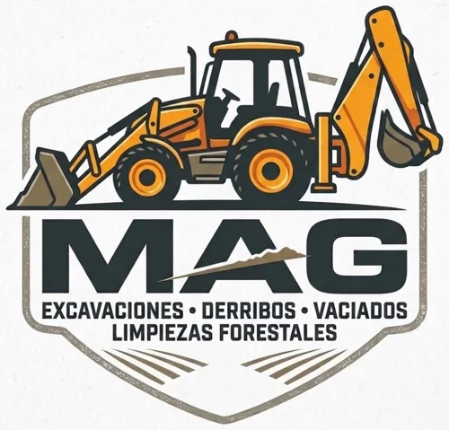
Preparamos tu terreno de principio a fin: excavación, movimiento de tierras, construcción de piscinas, albañilería y alquiler de maquinaria con o sin operario.
Un único equipo para toda la obra, desde el primer movimiento de tierra hasta el remate final.

Vaciados, zanjas, cimentaciones, desmontes y movimiento de tierras para obra nueva, naves y parcelas.
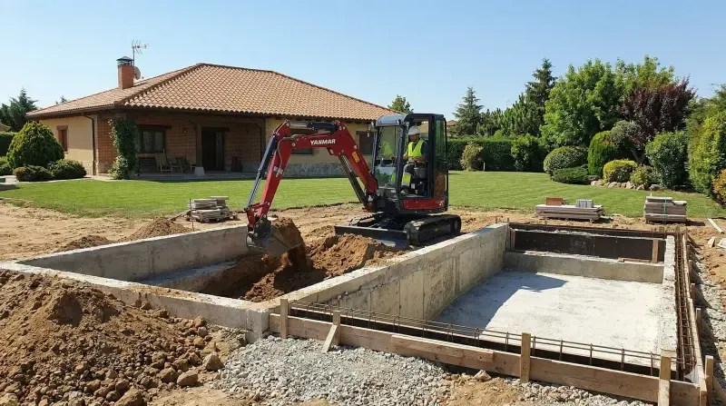
Construcción de piscinas de obra: excavación, vaso, instalación y acabados. Llave en mano.
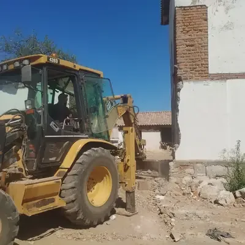
Demoliciones, muros, soleras, reformas, cerramientos y todo tipo de trabajos de albañilería.
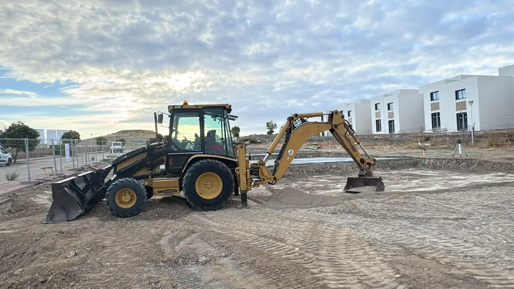
Retroexcavadoras, miniexcavadoras y camiones, con operario o sin él, para obras de cualquier tamaño.
Algunas de nuestras obras, clasificadas por tipo de trabajo.
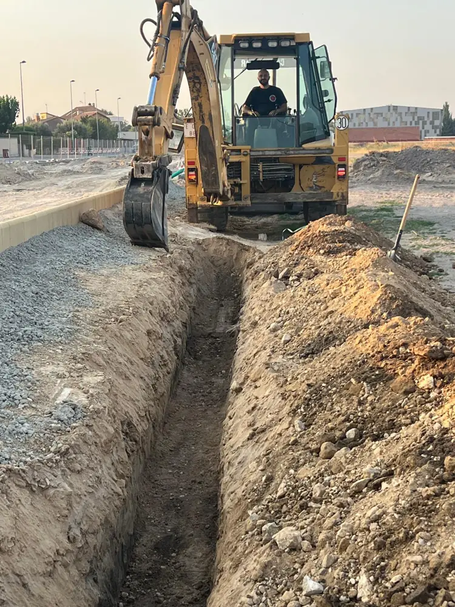
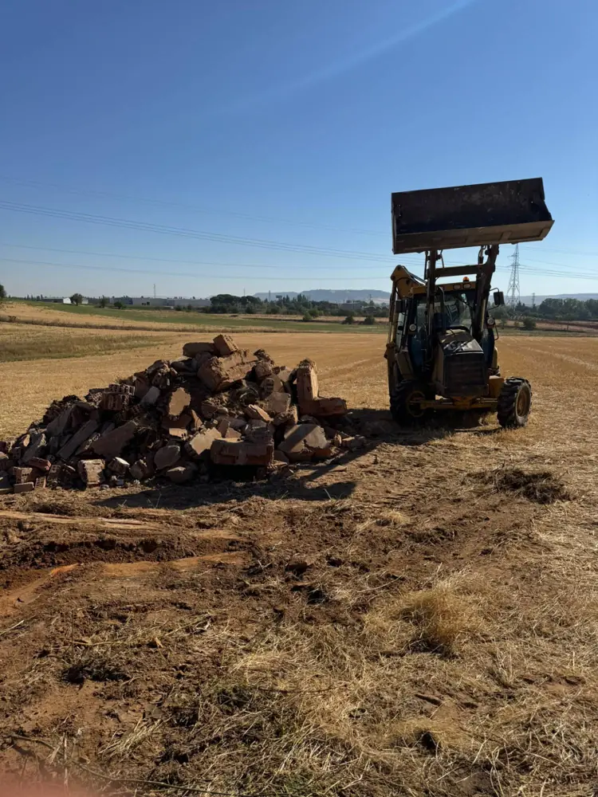
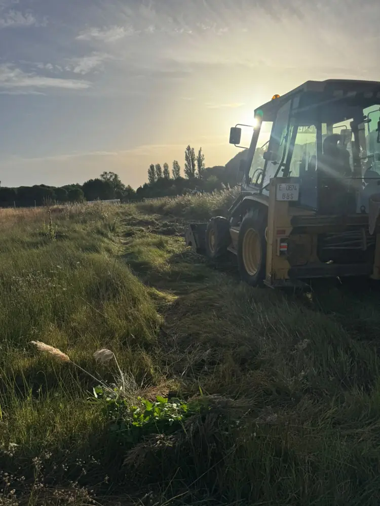
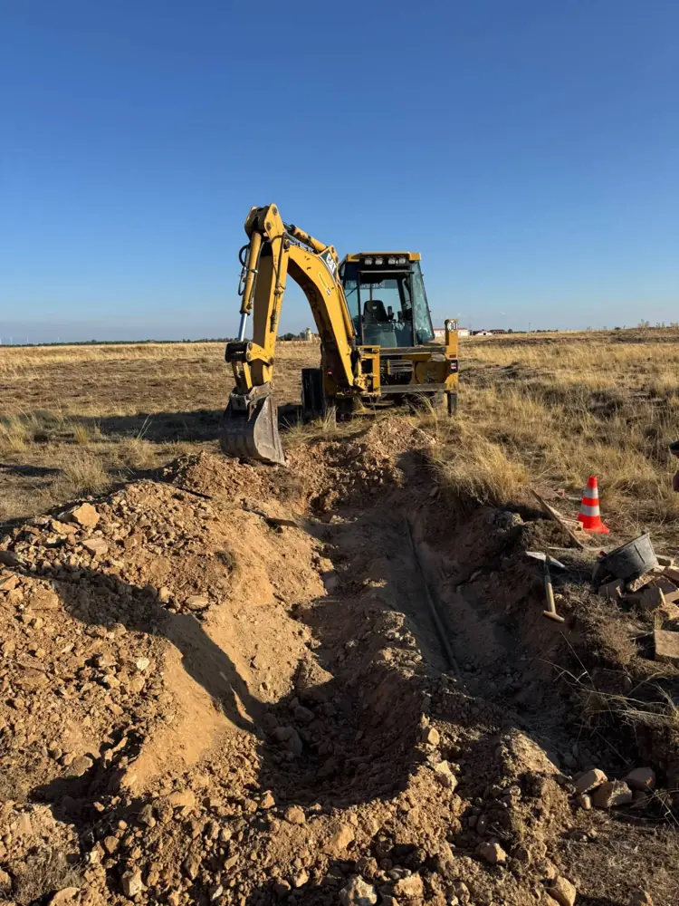
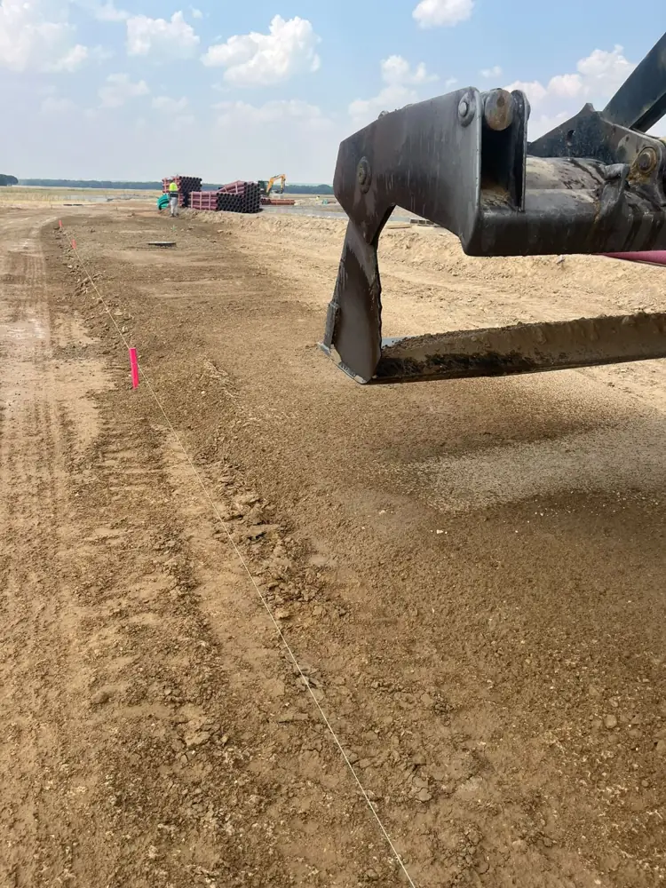
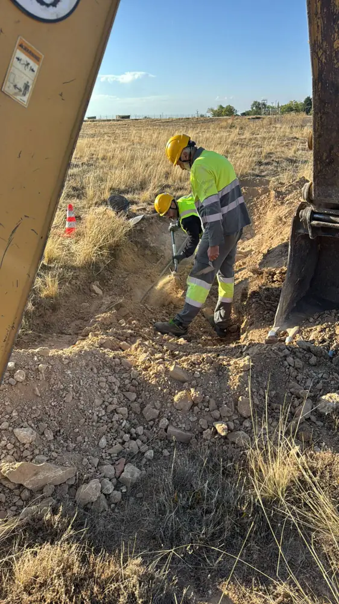
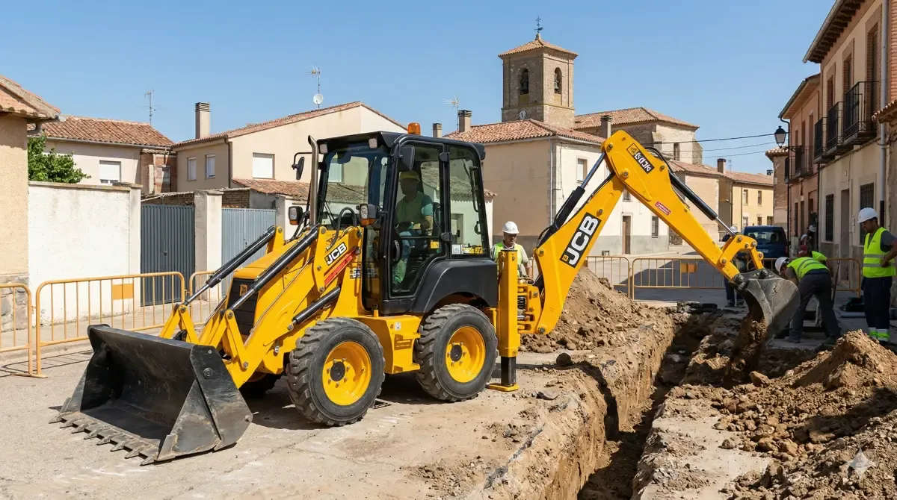
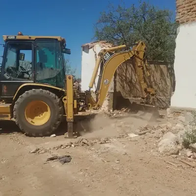
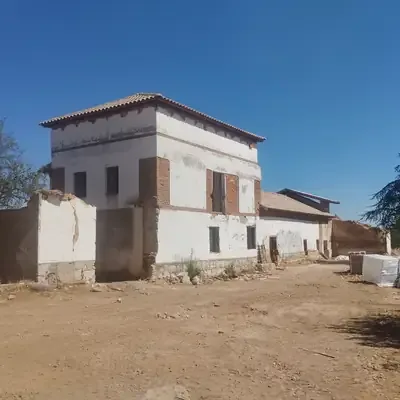
Somos de Sanchidrián (Ávila) y trabajamos cada obra como si fuera nuestra.
Hablas directamente con Christian Arribas, quien hace el trabajo. Sin intermediarios ni sorpresas en la factura.
Maquinaria y transporte propios para cumplir plazos y adaptarnos a tu obra.
Visitamos la obra y te damos un presupuesto detallado y sin compromiso.
Desde Sanchidrián, junto a la A-6, nos desplazamos a toda la provincia de Ávila y de Valladolid.
Llámanos o escríbenos por WhatsApp y te respondemos lo antes posible.